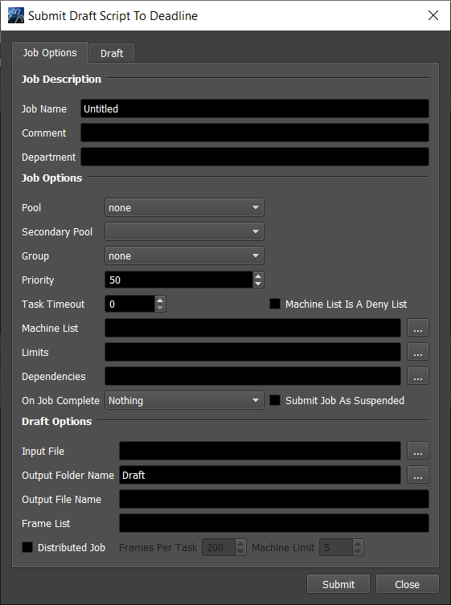
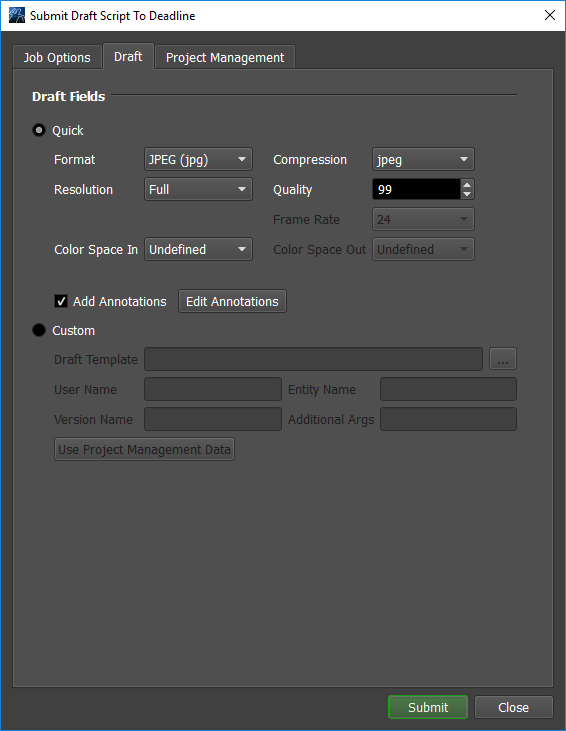

Draft¶
Overview¶
Draft is a tool that provides simple and lightweight compositing and video processing functionality, designed to automate typical post-render tasks. It is implemented as a Python library (works across all platforms), which exposes functionality for use in Python scripts (which are referred to as Draft Templates). Draft is designed to be tightly integrated with Deadline, but it can also be used as a Standalone tool.
Please note, new Quick Draft options have been added to most of the job submitters that allow you to easily create movies from your rendered images or perform file conversions, without having to create a Draft template (Python) script. Instead, a generic Draft template that ships with Deadline is now used, and it lets you specify settings like Output Type, Codec, Resolution, and Frame Rate. See the Draft Event plugin for more information.
Many Draft code snippets from our Draft Cookbook can be found in our Draft Documentation.
Draft Repository Paths:
Sample Draft Scripts:
/<DeadlineRepository>/draft/SamplesDraft OCIO/ACES LUTs:
/<DeadlineRepository>/draft/ocio-configsDraft for Linux:
/<DeadlineRepository>/draft/LinuxDraft for Mac:
/<DeadlineRepository>/draft/MacDraft for Windows:
/<DeadlineRepository>/draft/Windows
Licensing¶
Note
Starting with Deadline 10.1.23, Draft and Quick Draft do not require a license. The ONLY exception is that a Draft Pro license (FEATURE draft-pro-codec) is required if you are encoding to the 3rd party Avid DNxHD codec.
Licensing on AWS¶
When using a Draft license in AWS, there are additional steps. All of the following require that AWS Workers have access to a Deadline License Server.
Option 1: If using AWS Portal, setup Bring Your Own Licensing with your Deadline license server.
Option 2: Add the THINKBOX_LICENSE_FILE=port@hostname environment variable to all jobs requiring a Draft license that will run on AWS, where hostname
is the hostname of your Deadline license server and port is the port your Deadline license server is listening on.
The default port is 27008. For more details about setting Job environments, see Controlling Jobs Environments.
For more details on setting Job environments, when doing manual Job submission see, Render Environment.
Option 3: Add the THINKBOX_LICENSE_FILE=port@hostname environment variable to the Amazon Machine Image (AMI) or EC2
Instances that you are using for jobs requiring a Draft license. On Windows, add the THINKBOX_LICENSE_FILE environment variable to the system or user environment variables. On Linux, add the THINKBOX_LICENSE_FILE environment variable to system or user-specific startup
files.
Upgrading¶
While the Deadline repository installer ships with a build of Draft, via our beta program or otherwise, it is possible a newer version of Draft might be available via our beta forums. Draft can be upgraded independently of Deadline. Once you have downloaded the latest Draft build, simply extract the .zip file into your repository only under the Draft folder. The Workers will automatically sync up new versions of Draft to their local working folders when needed, similar to Deadline’s regular auto-update system. You can verify your version of Draft in a Python script like this:
import Draft
print(Draft.LibraryInfo.Version())
Job Submission¶
There are many ways to submit Draft jobs to Deadline. As always, you can simply submit a Draft job from within the Monitor from the Submit menu. In addition, we’ve also added a right-click job script to the Monitor, which will allow you to submit a Draft job based on an existing job. This will pull over output information from the original job, and fill in Draft parameters automatically where possible.
We’ve also added a Draft tab to all of our other submitters. Submitting a Draft job from any of these uses our Draft Event Plugin to submit a Draft job based on the job currently being
submitted (this is similar in concept to the right-click job script described above). The Draft job will get automatically created upon completion of the original job via the OnJobFinishedCallback in the Draft event plugin.
Submission Options¶
The general Deadline options are available in the Draft submitters, and are explained in the Job Submission documentation. Draft-specific options are explained below. It should be noted, however, that given the nature of Draft scripts, not all of these parameters will be used by all scripts. They can even feasibly be used for different purposes than listed here.
Job Options¶
Draft Options
Input File: The input file(s) on which to apply the Draft script. Passed to the Draft script as ‘inFile’.
Output Folder Name: The output folder in which the Draft script should put output files. Can be absolute, or relative to input folder. This is passed to the Draft script as ‘outFolder’.
Output File Name: The name that the script should use for the output file(s). Passed to the Draft script as ‘outFile’.
Frame List: The list of Frames that should be processed by the script. Passed to the Draft Script as ‘frameList’, ‘firstFrame’, and ‘lastFrame’.
Distributed Job: Specify if the job will be distributed. If enabled, custom scripts must work with taskStartFrame and taskEndFrame.
Frames Per Task: The number of frames, or chunk size, to be assigned to each task.
Machine Limit: The maximum number of machines that can process a distributed job at one time. Specify 0 for no limit.
Draft Options¶
These options can be found on the second tab labeled Draft.
Quick Draft Options
If selected, Draft will generate an image or a movie based on the options specified below.
Format: The output format used by the Quick Draft submission.
Compression: The compression used by the Quick Draft submission.
Resolution: The resolution used by the Quick Draft submission.
Quality: The quality used by the Quick Draft submission.
Frame Rate: The frame rate used by the Quick Draft submission.
Color Space In: The color space in to use.
Color Space Out: The color space out to use.
Add Annotations: If enabled, the annotations from the Draft Annotations window will be added.
Edit Annotations: Opens the Draft Annotations window.
Custom Draft Options
If selected, Draft will generate a job using the Draft template specified below.
Draft Template: This is the Draft script (or Template) that you want to use.
User Name: The user name used by the Draft template. Typically used by the Draft script for frame annotations. Passed to the Draft script as ‘username’.
Entity Name: The entity name used by the Draft template. Typically used by the Draft script for frame annotations. Passed to the Draft script as ‘entity’.
Version Name: The version name used by the Draft template. Typically used by the Draft script for frame annotations. Passed to the Draft script as ‘version’.
Additional Args: Any additional command line arguments that you wish to pass to the Draft script should be listed here. Appended to arguments listed above.
Project Management Options¶
The third tab labeled Project Management is for setting up connections to event plugins. More information can be found in the Pipeline Tools Project Management documentation.
Plugin Configuration¶
The Draft plugin requires configuration only if choosing not to preserve the render environment while running as a specific user on Unix systems. For details, see Preserving Specific Environment Variables with Sudo.
Integrated Submission Script Setup¶
All of our integrated submission scripts have been updated to have a Draft section, in order to submit dependent Draft jobs.
Draft Standalone¶
Draft can be used outside of Deadline. In order to import Draft successfully, you will need to ensure Python knows where to look for the Draft module, either by including its install directory in the PYTHONPATH environment variable, or by appending it to os.sys.path before you do the import. You will also need to set the MAGICK_CONFIGURE_PATH and LD_LIBRARY_PATH (or DYLD_LIBRARY_PATH) environment variables to point to your install directory; this is so that ImageMagick knows where to find its ‘type.xml’ file. If you are simply planning on using Draft through Deadline, however, you do not need to worry about this at all.
If using Deadline’s Python, ensure you use these paths to instantiate dpython as they ensure the Deadline environment is setup correctly:
Windows:
C:\Program Files\Thinkbox\DeadlineX\bin\dpython.exemacOS:
/Applications/Thinkbox/DeadlineX/Resources/dpythonLinux:
/opt/Thinkbox/DeadlineX/bin/dpython
where X is the MAJOR version of Deadline.
All platforms need specific environment variables to be set for Draft Standalone (Python) to successfully import Draft:
Windows:
PYTHONPATH=/path/to/Draft install directory/Windows/XXbit MAGICK_CONFIGURE_PATH=/path/to/Draft install directory/Windows/XXbit where XX is either 32 or 64.
macOS:
PYTHONPATH=/path/to/Draft install directory/Mac MAGICK_CONFIGURE_PATH=/path/to/Draft install directory/Mac DYLD_LIBRARY_PATH=/path/to/Draft install directory/Mac
Linux:
PYTHONPATH=/path/to/Draft install directory/Linux/64bit MAGICK_CONFIGURE_PATH=/path/to/Draft install directory/Linux/64bit LD_LIBRARY_PATH=/path/to/Draft install directory/Linux/64bit
FAQ¶
Does Draft/Quick Draft need a license to run?
Starting with Deadline 10.1.23, Draft and Quick Draft do not require a license. See the Licensing section for an explanation.
Can I upgrade Deadline without upgrading the version of Draft I’m using?
Yes. See the Upgrading or Downgrading Draft section of the Upgrading or Downgrading Deadline documentation for more information.
Why does my custom Deadline 7 Draft submitter code no longer work in Deadline 8.0 or later?
Please note that as of Deadline 8.0, when submitting Draft jobs to Deadline, the KEY=VALUE entry for the Draft Plugin is named as follows in the job info file:
Plugin=DraftPlugin
Error Messages and Meanings¶
This is a collection of known Draft error messages and their meanings, as well as possible solutions. We want to keep this list as up to date as possible, so if you run into an error message that isn’t listed here, please contact Deadline Support and let us know.
Currently, no error messages have been reported for this plugin.

{kind=link}
{kind=link}